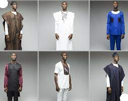

Traditional Attire
Explore the traditional attire worn by Ghanaians during cultural events and ceremonies. Rich in colors and patterns, traditional clothing reflects the diversity and heritage of the country.
Formal Wear
Discover the elegance of Ghanaian formal wear, suitable for business events and special occasions. Ghanaians take pride in dressing well, and formal attire often includes vibrant colors and unique accessories.

Casual Dress
Learn about the casual fashion embraced by Ghanaians in everyday life. Comfort meets style in casual wear, with clothing choices influenced by the climate and cultural preferences.